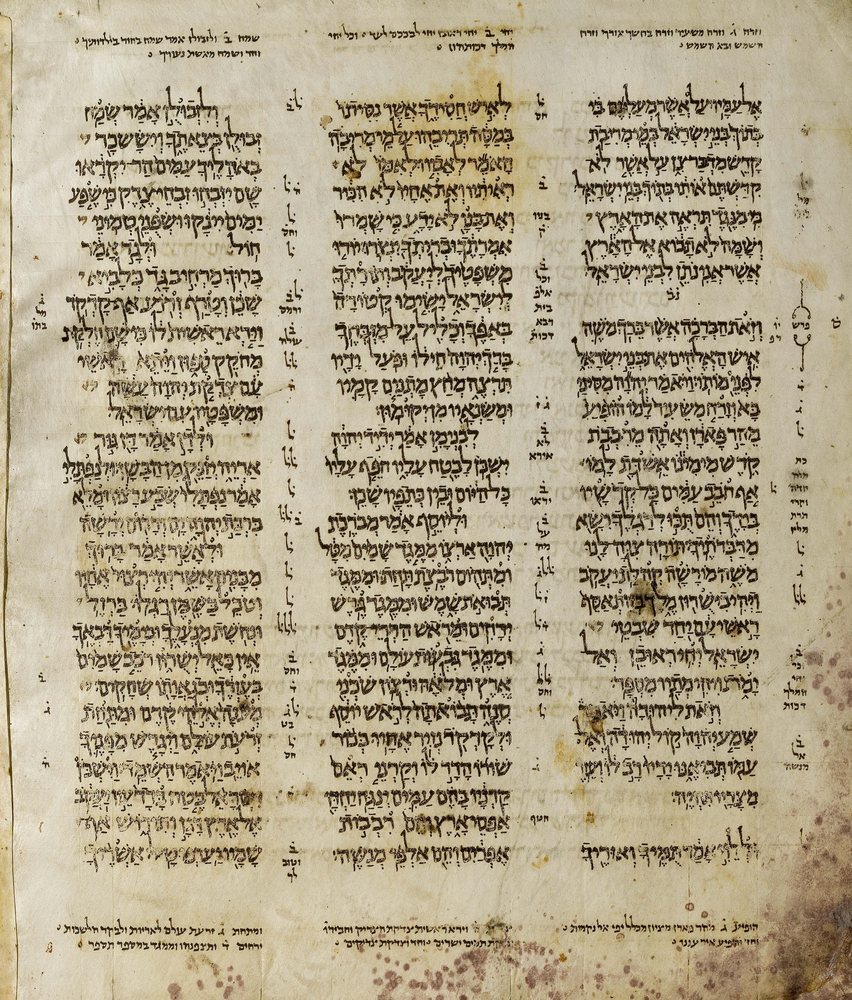

Aleppo Codex

- Find Name
- Aleppo Codex
- Description
- A bound Hebrew Bible copied in Tiberias in the tenth century by the scribe Shlomo ben Buya'a, with Masoretic notes added under Aaron ben Asher, and endorsed for its accuracy by Maimonides. Known as the Crown of Aleppo, it was kept in Aleppo's Central Synagogue for centuries until the synagogue was torched in anti-Jewish riots in 1947. When it resurfaced in Israel in 1958, about 40 percent of the manuscript, including most of the Torah, was missing; about 295 of its original 487 leaves survive.
- Historical Period
- Medieval
- Evidence Class
- Direct
- Interpretations
- Scholars agree it is the finest Masoretic exemplar, from the Ben Asher tradition; whether the missing leaves were destroyed in the 1947 fire or survive in private hands is still debated, and modern editions fill the gaps from the Leningrad Codex.
- Alternative Names
- Keter Aram Tzova; Crown of Aleppo
- Related Places
- Related Books
- Scripture Illuminated
- Biblical Significance
- The Aleppo Codex is the most authoritative surviving witness to the Masoretic Text, the Hebrew text behind most modern Old Testament translations, with vowel points, cantillation marks, and marginal notes that fixed pronunciation and spelling. Its survival, even damaged, shows the extraordinary care with which Jewish scribes guarded the Hebrew Scriptures for a thousand years.
- Artifact Date
- c. AD 920
- Current Location
- Shrine of the Book, Israel Museum, Jerusalem
- Date Discovered
- 1958
- Discovery Location
- Central Synagogue, Aleppo, Syria (kept there for centuries)
- Timeline Era
- Return and Second Temple
Awaiting Review Not yet checked against scholarly sources. Treat its claims as provisional until this entry is reviewed. About verification
Last reviewed: not yet reviewed